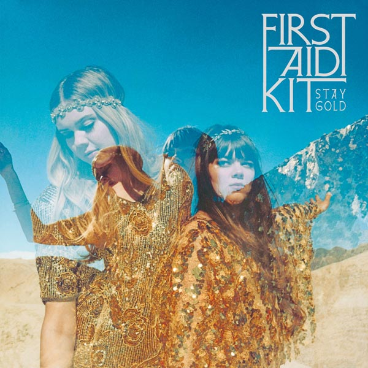

First Aid Kit – Stay Gold
Geplaatst door: Maaike Tol op November 15, 2014
Genre: Roots
Na een alleraardigst debuut, maakten de Zweedse zusjes Johanna en Klara Söderberg (nu 23 en 21) in 2012 pas echt indruk met het prachtige The Lion’s Roar en de hemels klinkende single Emmylou. Terecht brak First Aid Kit met die plaat door naar een groter publiek. Hoewel het duo daarna de overstap naar major Columbia maakte, zat tijdens de opnames van het derde album wederom indieproducer Mike Mogis (Bright Eyes) achter de knoppen.
Terecht brak First Aid Kit met die plaat door naar een groter publiek.
Muzikaal ligt de plaat in het verlengde van zijn voorgang en uiteraard staat de harmonieuze samenzang van de zusjes (ook te horen op het nieuwe album van Conor Oberst) centraal, maar de karakteristieke Americana krijgt een nieuwe dimensie dankzij The Omaha Symphony Orchestra, dat al op volle sterkte was te horen in de vooruitgesnelde en zeer fraaie eerste single My Silver Lining. De plaat werd gearrangeerd door de eveneens van Bright Eyes bekende Nate Walcott. Het zou ons niet verbazen als First Aid Kit met deze bijzondere plaat definitief gaat doorbreken naar het grote publiek.
Tracklist:
- My silver lining
- Master pretender
- Stay Gold
- Cedar Lane
- Shattered & Hollow
- The bell
- Waitress song
- Fleeting one
- Heaven knows
- A long time ago